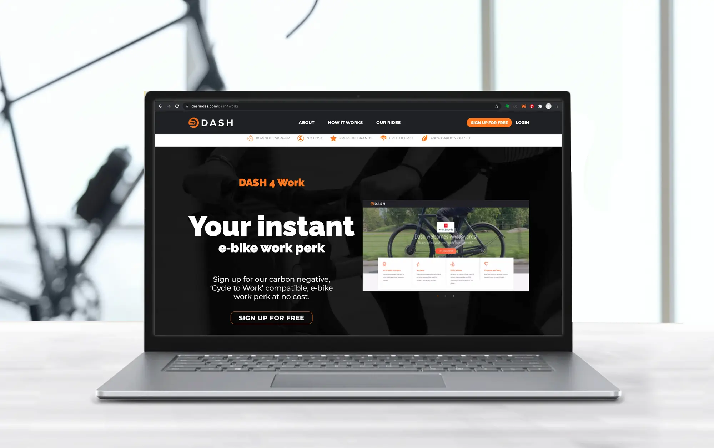
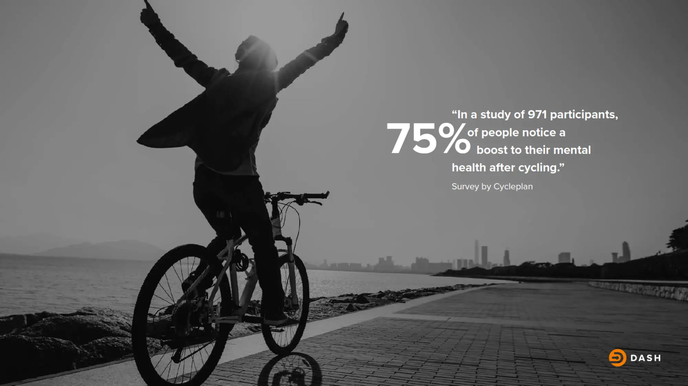
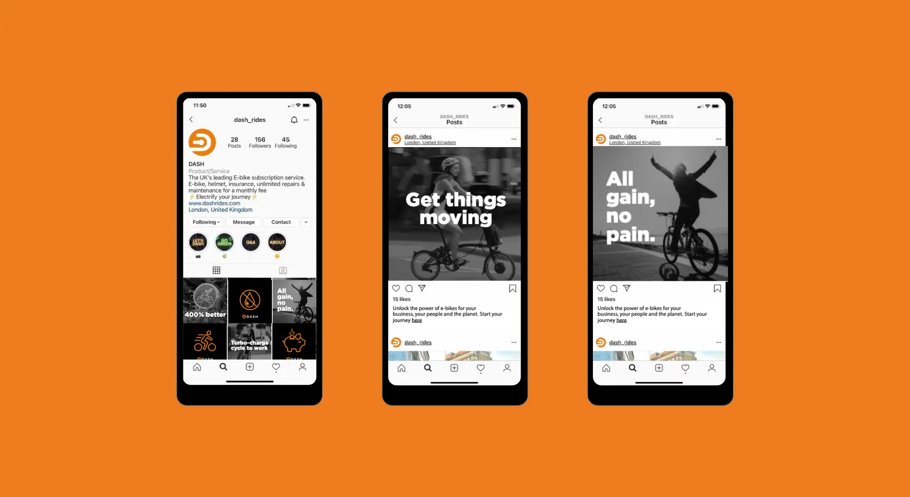
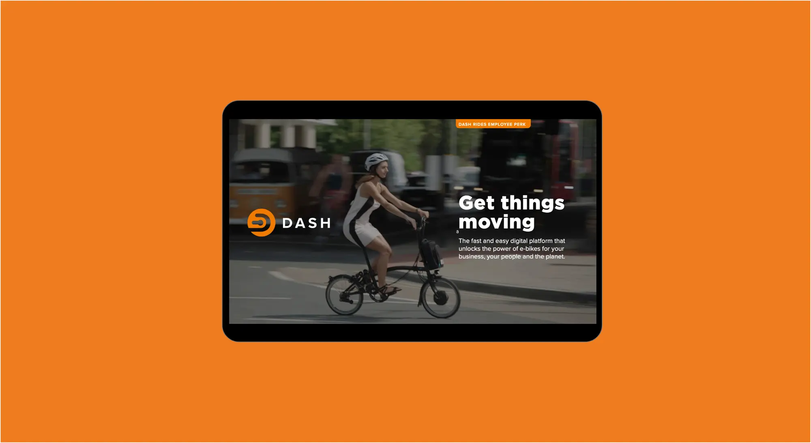
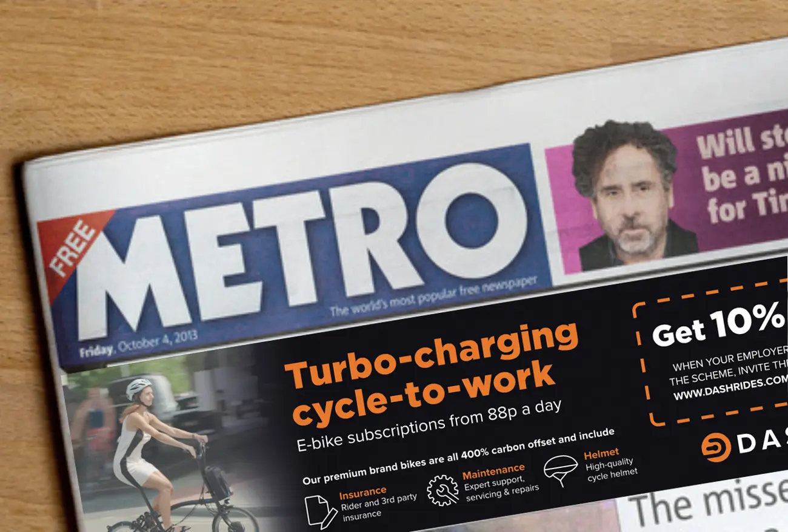
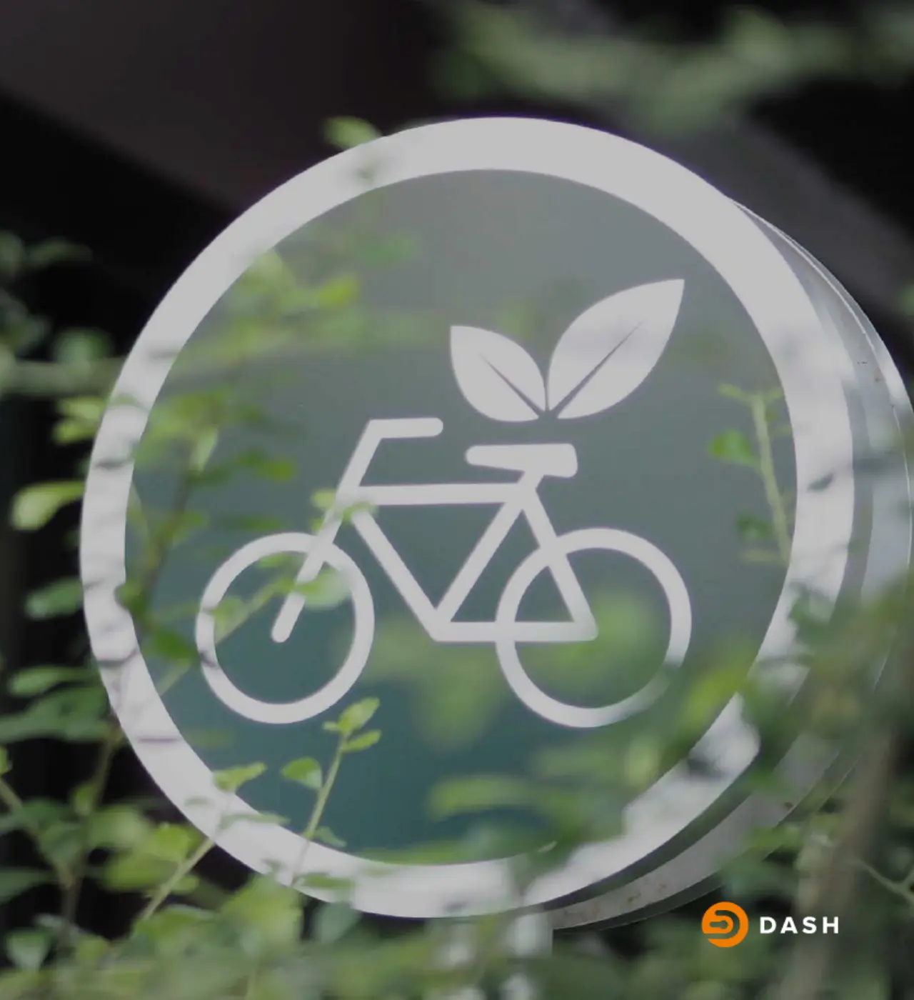
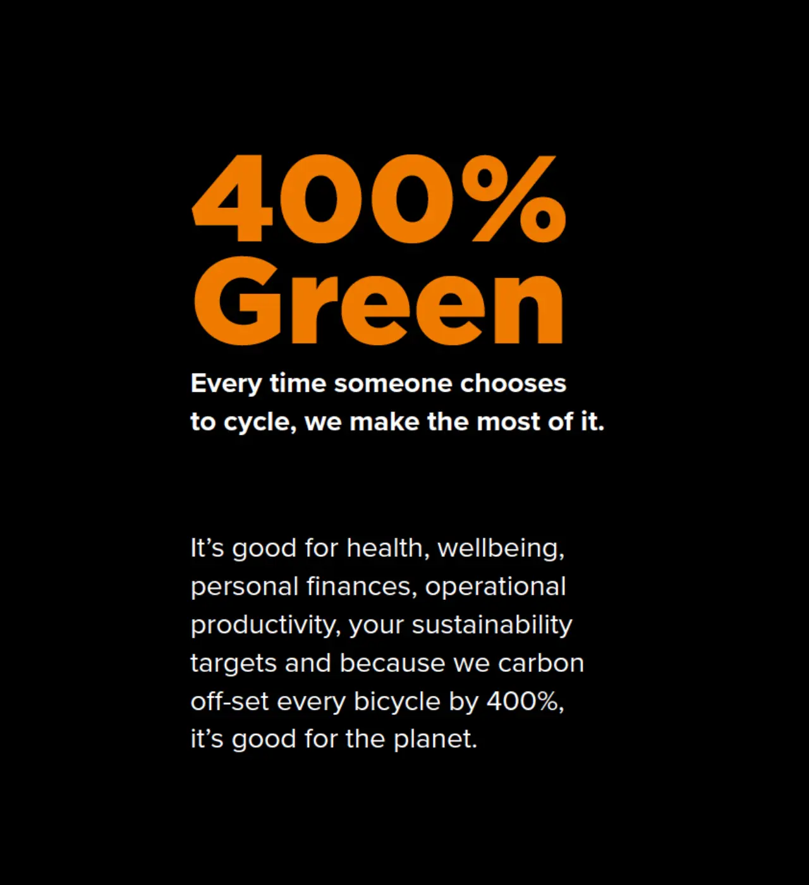

Digital
Dash Rides
Air pollution is rising, traffic is increasing, public transport is overpriced. When it comes to making progress, the world is in a traffic jam. DASH Rides are here to get things moving. Changing the way the world moves for good.

The work
Our Invention
Get Things Moving
DASH is making mass adoption of e-bikes easy. By targeting businesses with a free, plug & play solution that takes all the hard work out of owning an e-bike, and reaches hundreds of people at once.
They needed a platform to communicate their message, convince businesses fast, onboard them instantly and make it easy for their staff to make the right choice.
By drawing parallels with Cycle-to-Work and targeting both employees and businesses with easily digested factoids and compelling messages, we were able to drive demand from both perspectives. People were able to petition their employer at the touch of a button and employers were invited to plug the DASH interface into their business for free.





